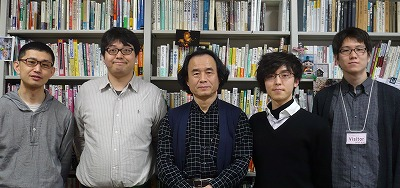

Rubyist Hotlinks 【第 27 回】 小波秀雄 さん
はじめに
著名な Rubyist にインタビューを行う企画「Rubyist Hotlinks」。今回は関西編第 4 弾をお送りします。関西編 (4) は、Ruby 関西の代表をされている小波秀雄さんにお話を伺いました。お楽しみください。
プロフィール
 Ruby が産声を上げた直後からの古参 Rubyist である小波秀雄さん。現在は京都女子大学で Ruby の授業を行っておられます。過去には監督としてロボコンの全国大会でチームを優勝に導きました。趣味はチェロ。
Ruby が産声を上げた直後からの古参 Rubyist である小波秀雄さん。現在は京都女子大学で Ruby の授業を行っておられます。過去には監督としてロボコンの全国大会でチームを優勝に導きました。趣味はチェロ。
- 好きな言葉
- いつでも柔軟に
- 尊敬する人
- ダーウィン
- ご本人のサイト
- Portrait of Hido Konami
インタビュー
: 
- 聞き手
- cuzic さん
- 語り手
- 小波秀雄さん
- 野次馬
- yuya さん、sixeight さん、ひがきさん
- 日にち
- 2011 年 3 月 13 日
- 場所
- 京都女子大学 小波研究室
（右の写真について。左から、ひがきさん、cuzic さん、小波秀雄さん、Yuya さん、Sixeight さん）
目次
プロフィール
cuzic 今日はお忙しいところ、ありがとうございます。
小波 いや、こちらこそありがとうございます。
cuzic よろしくお願いします。
小波 よろしくお願いします。
生年月日、出身地
cuzic では、まず簡単なところから。生年月日、出身地教えていただけますか？
小波 はい、1951 年 3 月 5 日です。
cuzic 1951 年生まれってことは何歳ですか？還暦ですかね？
小波 うん、ついこの間ね。
cuzic おめでとうございます。
小波 恥ずかしいですけどね。
cuzic (笑)。出身地は？
小波 僕の生まれは、宮崎県の今の都城市なんですよ。
cuzic なるほど。
小波 最近しょっちゅう出てくる高原町ってのがあるんですけども1 、その隣のすごい辺鄙な山間の集落なんです。川があって、田んぼがあってって言う感じの。
cuzic 山の方ですか？火山とかが爆発してた所？
小波 そうそう、だから 52 年前に爆発しましたってことを知ってるの。小学校の 1 年生か 2 年生だったけども。
好きな言葉、座右の銘
cuzic 好きな言葉、座右の銘っていうのは？
小波 座右の銘？なんだろう？
cuzic なんですかねぇ？僕もこれ難しかったなぁ。
小波 たぶん、そういうのを持たないのが座右の銘かな？
cuzic (笑)。持たない。
小波 いつでも柔軟に。というか、柔軟にというのは言い方で、行き当たりばったりと言うか。
cuzic 行き当たりばったり。それが座右の銘であると。
小波 必要に応じて。
尊敬する人
cuzic 次の質問ですけど、尊敬する人は？
小波 尊敬する人、まあ、ダーウィンとかね。
cuzic ダーウィン！進化論を考えた。
小波 彼はとても素晴らしい。
cuzic それはどういうところが？
小波 そうねぇ、彼って、観察とアイデアの人なんですよ。もう一つはねぇ、説得の人なのよ。
cuzic はいはいはい。
小波 だから自分が主張していることは絶対に正しいと言う確信はものすごく持ってるんだけども、同時にそれに対してどれくらい反論があるかと言うことも十分わきまえてるわけね。だから反論に対して、いかに説得するかということについて非常に周到に頑張っていくわけ。
cuzic ほう、なるほど。
小波 そしてね、大げさなことを言わない人なんです。
cuzic 先を見通して何を言うべきか考えてるっていう感じですね。
小波 ダーウィンが書いてる本がたくさんありますけど、基本的に事細かなことしか書かないんです。例えば、ランという植物の進化について書く場合は、ランについてひたすら事細かく書いて、そして最後にランはこういう風に進化したんだろうって言う感じで書いてるの。
cuzic はい。
小波 だからと言ってそこで「進化とはこういものだ」って書かない。
cuzic なるほど、まずは事実を丁寧に書いていくと。
小波 事実を丁寧に書いて、そして大言壮語しないという。だから彼の最後の論文の題材もミミズなんですね。2

cuzic へぇー、なるほど。
小波 あとね、人がそれを整理はするんだけど、でもそれをちゃんと見ると、考え方の筋っていうのはこうだってのをキチッと彼はわきまえてるわけ。
cuzic 自分では持ってるんだけど、直接は言わずに細かい事実を基にして説明してると言うことですか？
小波 うん。あと、すごくこっそり、ささやかに言うわけ。賢い人には分かるだろって感じで。
cuzic あ、そういうことですか。
小波 だから例えば、一つのことを進化ってことを言うためにどう論証するかってのがあるわけね。その論証のプロセスとしては、事実を時系列で並べていったら、確かに進化しているに違いないっていう、そういう風な歴史的な立証の仕方てのが一つありますよね。
cuzic はい。
小波 でもその時に私たちが知ることが出来る歴史には断絶があるから、だからそれは完全な論証では当然ありえない。じゃあってんで、今、進化が起きてるかってことを見ようとするとえらい大変なんですね。
cuzic 過去をすべて知ることは出来ないですからね。
小波 そう。現実にこれがこれに変わっていくよって言うのを見せるのはとても大変でしょ？
cuzic はい。
小波 で、彼はどうしたかって言うと、数十年間くらいの変化を例示するわけです。そして、それを外挿3していけばもっと巨大な変化になるだろうと。現実に変化してますよっていうスローモーションのほんの身近な部分だけは観察で言えるだろうと。そういう風な言い方をしたわけ。
cuzic 実際に、進化と言う長い歴史のものについても、20 年とかのスパンとかでやってみると。調べてみると。
小波 そう。だからミミズを 40 年も調べるとかね。それでこれくらいの変化を起こせるんだから、累積するとこれくらいになるだろうって。僕らの考えるスケールからいうと、進化なんてあまりにも巨大な時間であまりにもゆっくりなペースだから想像できないペースだけど、それをどういう風に論証すれば言いかってことを、彼は相当に周到にやってるわけですね。
cuzic そういう点が尊敬できると。
小波 そう。だからね、科学の方法って言うのがものすごくよく分かってて勉強になる。
cuzic なるほど……。ちょっとまだまだ質問がありますんで先にいかせていただきます。あの、このペースで行くと、僕、家に帰れなくなって帰宅難民になってしまう可能性がありますんで (笑)。当然、もっと聞きたい気持ちもあるんですけど。
全員 (笑)
代表作
cuzic 次、代表作。えっと、最近、本をお書きになったと言う話も聞いてますけども。代表作と言えば。
小波 代表作……。無いなぁ、いまだに無い。ソースも書き散らして、授業に使ってたりしますけど。
cuzic これまでの一番の代表作は、これまで卒業していった学生であると。
小波 あ、それは言えますね。
Sixeight おー、きれいな。
小波 綺麗にまとめますな。ありがとう。
Sixeight ちょっと出来すぎてませんか (笑)
cuzic (笑)。
小波 だって、僕ね、1999 年のロボコンのチームの監督ですからね。全国優勝の時の。4
cuzic 全国優勝したと言うのが、一番の代表作であると。
小波 自分の教え子の中ではね。その関係では大物が弟子にいますけども。
cuzic なるほど。
好きなメソッド、嫌いなメソッド
cuzic 次、好きなメソッド、嫌いなメソッド。
小波 はい。好きなメソッドは、なんだろな？やっぱり一番使ってるのは iterator だよね。
cuzic iterator。each とかですか？
小波 each とか。map の方がいいかな、なんて。each より map の方が楽しいよね。
cuzic そうですね。僕も map 派ですね。大体、この好きなメソッドという質問は map 派か collect 派を答えるという間違った解釈が行われてるんですけども (笑)
全員 (笑)
cuzic とにかく、小波先生は map 派であることが分かったと言うわけで (笑)。嫌いなメソッドは何ですか？
小波 嫌いなメソッド、なんだろ。printf かなぁ。
cuzic printf ですか？
小波 あんまり好きじゃないなぁ。
yuya それは名前とかってことですか？それとも書式指定子が古臭い？
小波 うーん、使うけど、なるべく他で逃げておいて、必要な時だけ使う。逆に使いすぎて、古女房的に嫌いになった (笑)
cuzic 桁数とかカンマとかを色々表現したい時には、僕は便利だと思うんですけど。
小波 うん、まあ便利は便利だ。でも綺麗に書きにくいと言う気がします。
Ruby に関して
Rubyist になったきっかけ
cuzic 次、Ruby に関して。Rubyist になったきっかけ。
小波 Rubyist になったのは、僕の大後輩の伊藤彰則さん 5 という人がニュースグループで Ruby の情報を流してるのを見て、これ面白いねって使い出したのが最初。
cuzic ちなみに時期としてはいつ頃ですかね？
小波 1995 年。
cuzic それは古い！それは Ruby が誕生した直後？産声をあげたばっかりの時？
小波 そう、直後。
cuzic へぇー。最初はどう感じました？
小波 あー、最初に感じたのは awk よりも本格的だし、Perl よりも楽かなという感じかな。
cuzic あぁ、そうですね。
小波 とにかく見た目が綺麗だった。すっきり感が強かったですね。だから、それでこれいいなと思って。Perl やるよりこっちやる方が成長株だなって思った。
cuzic なるほど。すごいなぁ。すごく古い時期からの Ruby ユーザーなんですね。
現在の Ruby との付き合い
cuzic 現在の Ruby との付き合い。
小波 えーっと、いつも書いている言語。もういつも、Matz を Twitter でフォローしてるし、ruby-list と ruby-dev を購読してますねぇ。
cuzic あー、メーリングリストもちゃんと購読していると。小波先生は結構、投稿もする方ですよね。
小波 たまにしますね。ruby-list はとってもいいんですよ。分かんない時に投稿するとパッと返事が返ってくるから。
cuzic すぐに返事が来ますよね。
小波 で、悪意の人が全然いないしね。
cuzic 健全なコミュニティですね。
小波 うん、いいコミュニティ。
Ruby の好きなところ、嫌いなところ
:
cuzic Ruby の好きなところ、嫌いなところ。
小波 好きなところは、美しく書けるところ。
cuzic あー、美しく書ける。
小波 うん、そこに尽きるかなぁ。自分が考えてることに対して非常に素直に書けるっていうね。
cuzic うん、そうですね。人間から見て素直に見えるようになってますよね。
小波 嫌いなところはね、他の新しい言語に飛びつくために、エイヤって壁を越えないといけないような気がしてしまうことが。
cuzic それはそうですね。
小波 Ruby に安住してはいけないということを、最近よく考えるんですよね。
cuzic Ruby 以外の言語を使う時に？
小波 そう。Python も触ってみなくっちゃって思うでしょ。そういう時にやっぱり、すぐ挫けちゃうんですよね。
cuzic なるほど。そういうところが Ruby の嫌いなところ。でも嫌いなところって言うより……
yuya Ruby が良すぎてなかなか移れなくなっちゃう。
cuzic 良すぎて (笑)。他の部分で支障が出ちゃうと。
小波 だって、Rubyist で Ruby 嫌いって言う人はいないんじゃないかしら。
Ruby を使った成功事例
cuzic Ruby を使った成功事例。
小波 うーん、圧倒的に e-Learning 系のアプリケーションですよね。
cuzic そんなんあるんですか？
小波 自分で作ってるの。
cuzic あー、自分で作ったやつですか。
小波 この大学に来て、最初に教え始めたのが 2000 年なんですよね。統計とかプログラミングとか教えろってことだったんですよね。
cuzic はい。
小波 そしたら文系の女子大でしょ。そうするとね、もう、採点しなきゃなんない数が半端じゃない。
cuzic あー、学生数が多いと。
小波 そう。しかも採点が嫌いな人間だし。なんで採点が嫌いかと言うと、一つの答案を見てね、うーん？と考え込んじゃってね。「うーん、どうしたものか？」って 5 分も 10 分も考えこむことがしばしばあるから。
cuzic なるほど。
小波 もう、採点のエネルギーが保たないと言うことがあって、もうこれは機械的に採点させるしかないと。と言うことで、せっせ、せっせと自動採点の cgi を書き始めたのがそもそもなんですよ。
cuzic あ、そういうのを作ってたわけですか。
小波 今でもちゃんと動いてます。最初に書いたのが、統計のシステムなんですね。
cuzic 統計学の授業のための採点のシステム？
小波 そう。確率の計算出したり、判定とか検定とかを出題すると。
cuzic なるほど。それが一番の成功事例であると。
小波 うん。まあ楽しんで作ってるんですけどね。
cuzic まあ、自分で問題作って、採点するのに比べたらずっといいですよね。
小波 でも、例えば一つの問題を作るのにね、1 週間以上あれこれ煩悶してるわけでしょ。あの、コーディングとしてそれが難しいわけじゃないんですけど、どういう問題でどういう誤答があるかまで考えて、非常に細かいことをやらないと、長期的には役に立たない。
cuzic なるほど、すごいチューニングしてるって言うことですか？
小波 そうそう。ものすごいチューニングが必要なので、それが大変なところなんですね。だからそれが多分普通にプログラマが分からない部分の工夫なんですよ。
cuzic なるほど。そういう教育者としてのこだわりも含めてシステムを作りこんでると。
Ruby のキラーアプリケーション
cuzic 次の質問ですが、Ruby のキラーアプリケーションということで、これも難しい質問ですが。
小波 キラーアプリケーション？
cuzic これが自分にとってキラーアプリ、これがあるから Ruby を使ってるというライブラリとかありますか？
小波 ライブラリと言えば、一番使ってるものは何かなぁ？やっぱし cgi なんじゃないのかなぁ？
cuzic cgi ライブラリですか。
小波 うん、「なんとかならないのかね？」っていう不満はいっぱいあるんだけど。誰かなんとかしてくんないですかね？ HTMLも時代とともに変遷しているんだし。
cuzic まあ、確かに今から cgi を頑張ってメンテナンスする人はいるんですかね？
yuya いや、可能性は低そうですね。アプリケーションのキラーアプリは何か無いんですか？
小波 アプリケーション？
Sixeight Ruby を使い始める強いきっかけになるアプリケーションとか。
小波 なんだろ。逆にどういうことをイメージすればいいの？
yuya 例えば、昔は tDiary を動かしたいから Ruby を使うという人がいたわけです。
小波 あー、そういうことね。
yuya 現在ではあんまりないですね。昔はそういう時代もあったということで。
小波 普段いつも使ってて、必ず自分のノート PC やら mac にインストールしてるのは Hiki ですね。
cuzic あー。Ruby で書かれているじゃないですか。
小波 はい。
cuzic なるほど。Hiki はよく利用していると。
小波 うん。だってね、自分のところで Apache 走らせとけば、すごく便利だもんね。
Ruby の習得
: 
cuzic Ruby の習得は簡単でしたか？
小波 簡単だから始めたんやもん。
全員 (笑)
cuzic なるほど。ま、そうですよね。Ruby 難しいと言う人が結構いるんですけど、僕はそんなに難しくないなぁと。
yuya 簡単な Ruby の中でも難しかったところはないですか？全体的には簡単なんだけど、ここだけはちょっと……みたいな。
小波 使い方ではほとんど悩んだことは無いんだけど、概念的に「 Mix-in ってなあに」みたいな所とかね。
cuzic ああ、なるほど。
小波 そういうところが最初分かんなかったなっていうのはありますよね。でも逆にクラスとかは Ruby でやったから、Java が分かったみたいなところはありますよね。だから Ruby の難しいところって言うのがあったら Ruby としては困るんじゃないかしらね。
yuya まあ、でも全体的には簡単ですよね。
cuzic うん、簡単簡単。そう思いますね。やっぱ他の言語でオブジェクト指向とか難しいって思って挫折する人もいますけど、Ruby を使ってると自然に身につくというか。
小波 うん。
cuzic そういう風に作られてると思いますねぇ。
yuya 小波先生は授業で Ruby を使われてると思うんですけど、Ruby にした一番の理由は何ですか？
cuzic おお、いい質問。
小波 それはねぇ、さっき言いましたけども、2000 年にこの学部が出来たんですね。京都女子大学現代社会学部っていう学部が出来たんですよ。
cuzic はい。
小波 その時に呼ばれんたんですよ。なんか知らないけど、ロボコンの優勝監督だから呼ばれた気がするんですけど。ロボコン先生って呼ばれて。
全員 (笑)
cuzic ロボコンと現代社会学のつながりがちょっと理解できないですけど (笑)
小波 まあ、この世界だから、ちょっとメディアに露出すりゃぁっていうのが。
全員 (笑)
cuzic え、ロボコンで結構有名になったんですか？
小波 そうですよ。ロボコンの優勝監督だし、全国大会の競技委員長でもあったし。
cuzic へぇー。
小波 まあ、それはいいんですけど、プログラミングの授業をやれっていう話で。
cuzic それは元々その話があってここにきていると言うことですか？
小波 そういうことです。で、プログラミングなら何を教えてもいいですよと。で、その時に考えたのがいくつかありますよね。
cuzic はい。
小波 あの頃は、1 つの選択肢は Pascal なんですよ、1990 年代だったら。それから Visual Basic ですよね。それから C 言語ですよ。大体この 3 つが教育用の言語としては多かったんですよ。
cuzic へぇー。
小波 その中で、当時、海外の教科書なんかは Pascal なんかが非常に多かった。なので Pascal は教育用の言語として非常に優れてるなってことなんですけども、やはり処理系そのものは細ってきちゃってるから。
cuzic まあ、そうですね。
小波 だからあまり適切じゃないなと。VB は買わなきゃならんし。Microsoft にうらみは何も無いんだけども、やっぱりある特定のプラットフォームのための言語ってのは少なくとも教育用には適さないなと。
cuzic うーん、そうですね。
小波 もちろん自分では全然かまわないんですけど。で、C はね、当時パソコンフリーズと言うのがいくらでも起こる状態でしたから、そうすると教室の中で何人もがフリーズしてしまうだろうと。そうするとケアしきれないね、と。
cuzic なるほど。まあ、みんなプログラム書くと必ず segmentation fault するような言語ですからね。
yuya (笑)
小波 だって、だいたい scanf でアウトですからね。
cuzic まあ、そうですね (笑)
小波 だからそれは厳しいなと。だとすると awk かなというのもチラッと思ったんですよ。でも awk はあまりにも特殊すぎちゃうから。
cuzic テキスト処理向きすぎると言うか。
小波 それに仕様的に非常に楽に出来ちゃってて。例えば、変数のスコープが渡してないやつはグローバルになっちゃってるんですね。そういう、デフォルトはグローバルで、引数で渡してやるとローカルだみたいな、ね。そういう仕様なんで使いにくい。
cuzic はい。
小波 と言うか、あまりよろしくない。そんなもんでプログラミング教わったら良くない。じゃあ Perl か Ruby くらいしかない。まあ、lisp も一瞬考えたけどやめましたね (笑)
全員 (笑)
cuzic 賢明な判断だと思います (笑)
小波 そこで結局は何をしたかと言うと、これは Ruby がいいんじゃないかと。
cuzic でも 2000 年の時点ですよね。まだ Perl が勢いがあってどんどん使われようとしてんじゃないんですか？
小波 うーん、でも、$ を変数の頭につけるのが嫌なので。
yuya 美しくない？
小波 うん、やっぱり綺麗じゃない。
cuzic なるほど。
ひがき 2000 年だと Java とかはなかったんですか？
小波 Java はありましたね。ただね、2000 年だと Java は重かった。
yuya そうですね。当時はまだ、マシンのスペックも Java の考え方に追いついてきていないというか。
小波 だからねそういう意味では、割と自然に選択した言語なんですよ。
yuya へぇー。
cuzic なるほど。
小波 ある意味ね、短くまとめりゃね、Pascal のような簡潔さや表記のやりやすさを持っていて、しかもオブジェクト指向で、これから成長株という、そういう感じがありましたね。
全員 へぇー。
cuzic これで Ruby がこれだけ使われるようになって。
小波 そう。でも最初のうち大変だったのがね、学生が就活で行くのにね、その頃 2003 年くらいでしょ。
cuzic まあ、最初の卒業生はそれくらいになりますねぇ。
小波 そうすると、就活に行くと、知られてないわけですよ。
yuya そうですね。まだ知られてないですね。
小波 だから、Ruby とはこういう言語であって、と言うことを説明しなさいと。もちろん Java も教えてるんだけど、導入には Ruby を使って、うちのゼミに来ると Java を教えて、それでいろいろ動きもののアプリケーションなど作らせるんだけど。そうすると、Ruby やりましたって言うと、「それ何？」みたいなね。
cuzic はい。
小波 それにひどいのになると「あれは簡易言語でしょ」みたいなね。そういう感覚を持ってる人が多いから。
cuzic まだ awk とかと、あんまり区別がついてないような理解をする人がいると。
小波 そう。一昨年、ある雑誌の記者さんと話したら、「あ、私そうだと思ってました。」とかいうから、何言ってんのって。それはともかくとしてそんな感じなんで、学生にはもし Ruby とはなんだっていわれたら、こういう風に答えなさいっていうのをね、ちゃんと想定回答を教えとかないといけない。
cuzic その時期で Ruby を使ってるって言ったらかなりすごいプログラマな印象を与えることができる。
yuya 相手が知っていたらね。
cuzic そうか (笑)
小波 知らないからね。だからこれはこうなんですって、胸を張って言いなさいって (笑)
cuzic でも面接官が、面接の時には知らなかったけど、後で調べて「おお、これはすごい」と思うかもしれない。
プログラミング全般
初めてのプログラミング
: 
cuzic 初めてのプログラミングという質問ですが、いつごろですか？
小波 初めてのプログラミングは 1972 年か、73年か。
全員 えぇー！
cuzic すごい。カードの時代ですか？
小波 えっと、テレタイプの時代の Fortran。
cuzic へぇー、すごい。yuya さん、まだ生まれてないんちゃうん？みんな生まれてない？
小波 大体、なんで俺、こんな年とってるんだろうと不思議になっちゃう。
全員 (笑)
cuzic あの、みんな同じように歳とっていきますんで (笑)
yuya ご心配なく。
小波 当時のプログラミング環境って、まず黒板で書いて。
cuzic そうですね。まだ端末を使うコストが高かった時代ですからね。
小波 1 台の端末にみんなで並んで、「君、5 分でやりなさい」と、こういう感じだから、書いてったやつを 5 分で一生懸命打ち込んで。なんかね、簡単な LOOP なんか書いて、ちょっとした計算をやれば、それでもうプログラミングの成績は A って言う感じだったんだ。
全員 へぇー。
小波 それから、その Fortran を使って、修士論文の時にも若干やりました。それから、教授と喧嘩しちゃって、飛び出して、予備校で働いてたんだけども、そこで Basic をやってた。
cuzic へぇー。
小波 これが実質的に初めてのプログラミングかもしれない。
美しいソースコード
cuzic では次の質問を。美しいソースコードはなんですか？
小波 今まで読んだ中で？
yuya 読んで感動したコード。コーディングスタイルでもいいですし、構造とかでもいいと思いますけど。このデータ構造に感動した、でも(笑)
小波 データ構造に感動したって、そりゃどのデータ構造も美しいよね。楽しいよね。まあ、Ruby とは直接関係無いけど、Tree 関係のアルゴリズムってのはものすごいですよ。例えば Red-Black Tree6 とか。
cuzic はいはいはい。
小波 あれは素晴らしい。僕はあれをね、すごい優秀な学生がいた時に、彼女と二人で英語の論文で読んでたんですよね。それで実装したりもした。あと、Rails ガイドの英文のドキュメントありますね。あれで Convention over Configuration7、あのコンベンションのところで色々と実例があるじゃないですか。
cuzic はい。
小波 そこで出てくる命名規則だな、特に。あれが素晴らしいなと思った。
cuzic なるほど。僕、それ見てないかも知れへんな。
小波 でもあれは英語がちゃんと分かってないと大変だなと思うんだけど。
yuya そうですね (笑)
小波 これの複数系って何よって。だって person の複数形ってさ、知ってる？
cuzic people？
小波 そう。でも persons って言いたくなるよね (笑)
全員 (笑)
cuzic persons をあえて使いたくなるときがありますよね。なんか people は別の概念に割り当てたい時があって。
- 小波 それは fish と fishes なんですよね。

cuzic fish は単複同形ですよね？
小波 いや、fishes もあるんですよ。
cuzic あるんですか？
小波 これ見てください。
cuzic ああー、fishes もありますね。
小波 これ間違いじゃないんですよね。英語が出来る子がたまに間違ってると言うことがあるけどこれが正しいんですよ。
cuzic そうですね。釣った魚がたくさんいる時は fish ですけど、いろんな魚の種類を言う時は fishes ですね。
小波 そんな風に英語の単複を意識しなきゃいけないのはちょっと日本人には頑張んなきゃいけないなってとこなんですけどね。でも、ああいう書き方の躾をきちっとやるって言うは、ただロジックが分かるとか以上に大事だと思うね。
cuzic アルゴリズムを多く知ってるかと言うより、美しく書けるかという方が実際は大事やったりとかしますからね。
小波 そうだね。
興味を持っているテーマ
cuzic いま興味を持っているもの。なにか作りたいものとかありますか？
小波 作りたいもの。うーん、やっぱ e-Learning 系はまたリファインしなきゃいけないとかはあるんですけど。あとはなんだっけなぁ……。最近、趣味のプログラミングを忘れていることがありますね。
cuzic あー、仕事ばっかりってことですか？
小波 うん。
cuzic 残念。
小波 残念。ちょっと残念だなと思います。でも時々思いつくんですけど、ポコッポコッって思いつくんだけども、それに取り掛かる時間が無くて。
cuzic 僕と共通してるかもしれない。yuya さんともそういう話をよくしてるなぁ。
yuya 時間をどう作ろう？
cuzic そうですね。
Ruby 以外のプログラミング言語
cuzic Ruby 以外のプログラミング言語は使いますか？
小波 そうねぇ。ここはやっぱり意外なことを答えた方が面白いよね。PostScript。
cuzic (笑)。PostScript ですか。
小波 PostScript は、まあなんていうのかな、スタック言語でね、これはとても楽しい。
cuzic 楽しいかな？
小波 で、基本僕はやっぱり物を作るのが大好きなんですよね。
cuzic うん。でも PostScript って絵というか、紙として出てくるので、結果はなんかすごく出来たなってなりますね。
小波 そう。で、相当複雑なことも出来ますから。
cuzic そうですね。
- 小波 昔、キーボードのこういう、ウチで使ってる本のね、教科書を書いたことがあるんだけど、その時に、まあ要するにキー入力からどうたらこうたらということがあるわけですよ。
cuzic はい。
小波 そうすると、こういう絵がね、欲しかったわけ。でも無いんですよ。
cuzic これを自分で作るわけですか？
小波 うん、キーボードのデザインがキチッとわかって、しかもその中にあーだこーだって書き込めるデザインって自分はデザイナーじゃないけども、PostScripter ではあるから自分で書いたわけ。
cuzic えぇー！これ PostScript で手で書いたんですか！
小波 そう、手ですよ、これ。
yuya えー！
cuzic それはすごい。今ならパワーポイントとかで頑張ってオートシェイプを並べて作りそうな。
小波 うん、でもね、これがプログラミング言語として、いいのはね、編集性に富んでるんですよね。簡単な書き換えをすれば、ちょっとパラメータ変えれば書き換えられるわけでしょ。
cuzic そうですね。
小波 やっぱりロジカルに出来てるってことだ。だからループをちゃんと書いてね、正確に作ってあるわけですからね。
cuzic ふーん、すごいなぁ。
小波 だからどれくらいの行数あるかわかんないんだけど、例えばこれを一つ作ってやれば、これもこれも全部ぱっと作れるしみたいなのがあるんで。
cuzic 再利用しやすいですよね。
小波 再利用しやすい。とにかく再利用のしやすさを考えるとね、こんな楽なシステムはないというか。
cuzic なるほど。
小波 こんなの 1 個 1 個作ってるわけにはいかないわけでしょ。プログラマってのはこういう時にどうやってこれをうまいことデータ化するかってことを考えて書かないといけないわけ。
cuzic へぇー、なるほど。僕やったら普通に頑張りそうやな。地道に (笑)
全員 (笑)
小波 地道が嫌いでこういうことをやってるの (笑)。こういうキー配列を書くのに正月 3 日間をつぶして書いたんですけども。でも結局 3 日間のうち、最初の 1 つのプロトタイプを作るのに大半を費やして、後は一瞬ですよね。それがプログラミングのいいとこなんですよね。
cuzic そうですよね。何度も同じ結果を得られると。
小波 やっぱりね、オートシェイプで 1 つ 1 つ作ってなんてことをやって、そこまでの加速性は無いですよね。
cuzic そうですね。数が多くなるほどプログラム書くほうが有利ですよね。
小波 だからね、そうすると、一番楽しくて他の人がおそらく真似できないだろうなって言うのはこれかな？
cuzic PostScript ですか (笑)
生い立ち
生い立ちについて
cuzic 生い立ちについて。子供時代はどうでしたか？
小波 ウチの仕事がね、工場だったんですよ。製材工場だったんですよ。まあ、親父が飽きっぽい人だったんで製材に飽きて精米をやったりもしたんですけども。とにかく、家の隣が工場になってて、そこが遊び場だったんですよね。そこでいろんな巨大なマシンが動いてるわけよ。ベルトがあって。
cuzic yuya さんが好きそうな世界ですね。
yuya 好きそうですね。
小波 やっぱりね、ベルトとかね、滑車とかね、そういうのがあって、そこにモーターがあって全体に動力を伝えて、でっかいシャフトあってプーリーがあって。当時はワンモーターでいろんな機械を動かすって言う、そういうやり方をしてたんだと思います。モーターが非常に高価で重たかったと言うのもあって。
cuzic へぇー、そういう時代があるんですか。
小波 そうするとね、動力伝達って言うのが見えるじゃないですか。あと、プーリーに挟まれて怪我するとかね。自分はしてないんだけども、働いてる人たちが怪我したりしてね。
cuzic するでしょうね。
小波 それでまあ、ガッタンガッタンという機械音の中で、それ聞きながら寝てたんですから。昼寝させる時に、精米用の箱かな？その辺に入れて置いとくと子供って寝ちゃうんですよ。自分は記憶が無いけども、弟とか妹とか。ガッタンコ、ガッタンコ、ガッタンコっていう結構うるさい所で寝ちゃうの。
cuzic へぇー、子供ってそういうところがあるんですかね？
小波 うん、電車に乗るのと似てるのかな。
cuzic 確かに。あのリズムで寝たりしますね。まあ、そういう機械で囲まれた環境で暮らしてて、それに影響されたって感じですか？
小波 うん。で、あと本ですよね。親父が読書家だったんで、家に本はたくさんあった。大人の本とかもたくさんあった。子供の本はあんまりない。
cuzic へぇー、ませてたんですね。
小波 僕ねぇ、6 歳くらいの時だと思うんだけどね、育児書なんか読んでてね。
全員 (笑)
yuya すごいなぁ。
cuzic 親がこのセリフを言った時は、この本のこのページを (笑)
小波 そうだな、親に叱られたときに、「そういう叱り方をしちゃいけないんだよ」って反論してあきれられたりしてた(笑)
全員 (笑)
cuzic 育児書は子供の手の届かないところに置くように気をつけないとダメですね (笑)。なるほど、そういう子供時代だったと。さっき、予備校時代に Basic をやったという話がありましたけど Basic をできる端末を持ってたってことですか？予備校時代に。
小波 予備校に買わせたんですよ。1980 年……、78 年かな？
cuzic 予備校が、電子化を始めていくような動きがあったってことですか？
小波 いやいや、違うんです。当時、200 〜 300 人の小さい予備校で、集計とか全部手でやってるんですよ。で、集計表をはさみで切って並べると言う素晴らしいソートの仕方をしてたの。
cuzic へぇー、なるほど。偏差値とか大変ですね。
yuya (笑)
小波 いや。偏差値は計算しない。
cuzic あ、その頃は無かったんですか？
小波 うん、当時はしてなかったはず。だから順位だけ。偏差値は全国模試の大きな試験だけ確かめてたから。
cuzic そうか、毎回はしないってことですか。
小波 そう、校内の順位だけが出ればいいっていう。あと当時は共通一次が始まった年だったんですよ。
cuzic はい。
小波 そうすると、当時、5 教科 12 科目くらいあったと思うんですよ。それの全てについて土曜日の午前中に試験をやるんですよ、時間を縮めて。
cuzic はい。
小波 そして、午後から採点して月曜日に貼り出すってことをやってたんですね。
cuzic あれは今はマークシートですけど当時もマークシートなんですか？
小波 マークシートだけど、マークシートリーダーなんかは無いから、目で読み取るんですね。
yuya えぇー！
cuzic 衝撃的 (笑)
yuya まさに光学読み取りですよね。
ひがき 確かに光学読み取り (笑)
小波 一応、マークシートで 5 つのうち 1 つが正解となってますからね、まっさらの答案用紙に正解の場所を線香で穴を開けとくんですよ。
全員 あぁー！
小波 それで塗りつぶされている場所の数を数えるっていう、こういうやり方をやってたんですね。
cuzic なるほど。だけど、全部を黒塗りすれば 100 点ですね。
全員 (笑)
小波 (笑)。そう、君は賢いですね。でもすぐにインチキってわかるから。
cuzic そうかそうか (笑)
小波 だからね、当時 300 人近いクラス毎とか、文系、理系毎とか集計するのに死ぬわけですよ。
cuzic (笑)。そりゃ、そうです。当たり前ですよ。
小波 もう、土曜日も夜中まで、そして日曜も半分くらいは出勤して、月曜日の朝一の生徒が出てくる頃には貼ってあると、そういう状態。
cuzic へぇー。
小波 それでこれはたまらんと思ってたんで。
cuzic それはそういう企画があって、それをどう実現するかを後で考えるっていう流れやったんですか？
小波 だってそれはもう経営者の命令ですから。
cuzic それはずっと、土曜日試験、月曜日貼り出しをやってたんですか？
小波 それはね、その年が共通一次のスタートの年だったから。
cuzic あー、なるほどなるほど。
小波 だから共通一次で落ちた連中がどーんとそこに来たわけです。
cuzic なるほど、分かりました。
小波 そういうスパルタ教育をやるのが好きな経営者だから。で、これは過労死しますよね。
cuzic (笑)。ちょっと大変ですよね。
小波 それでしょうがないから、何とかならんかとそれなりの合理化は試みたんだけど限界があるんで。で、雑誌見てたら、まだ PC の無い時代ですけども、いろんなメーカーがちょこちょこマイコンを出してきてたんですね。
cuzic はい。
小波 8 ビットの ぜっぱちのやつが一番多かったと思うんですけども。
cuzic ぜっぱち？Z80？8
小波 Z80。
cuzic PC-9801 の初代とかは出てたんですか？8000 が出てたくらいですかね？
小波 PC はまだ影も形も無いのよ。NEC のやつは。IBM の PC もまだ影も形も無い。そん時にタンディ・ラジオシャック (TRS) っていうアメリカのメーカーがマイコンを出してたんですね。で、仙台市内にこれを扱ってるところがあったから、聞いて、そしたらカナ ROM がつけられますって言うんですよ。
cuzic カナ ROM？
小波 つまりアルファベットなんだけど、アスキーのこっちかわを、カナにしちゃうんですよ。
cuzic あー、なるほど。半角カナみたいな？
小波 そう、1 バイトの。それにカナを埋め込めますよって。だからそれだったら、一応成績集計で日本語の表記も出来ますねっていうんで、社長に買わせたの。輸入して。で、こっちも何も知らないんだけど、これを入れれば出来るはずだってことだけは分かってるから。
cuzic はい。
小波 で物が届く 1 ヶ月くらいの間ね、必死で勉強して。
cuzic ああー、なるほど。でもまだ物が来てないから、開発環境も何も無くって？
小波 まず Basic の勉強してた。
cuzic 紙の上でってことですか？
小波 本を読みながら Basic を勉強してて。そして来たとたんに簡単なプログラムの練習を始めて。そして成績処理のシステムをやり始めたのが……、7 月の末に到着して実際に稼動したのは 10 月くらいじゃないかしら。
yuya あ、でもすごいですね。
cuzic 最初のプログラミングとしてかなりスピーディーに進んだってことですよね。
小波 しかも当時ディスクがフロッピーディスクで、しかも 80KB 9なんですね。
cuzic 80KB のフロッピーってありました？
小波 あるんです。
cuzic 5 インチとかより前の時代ですか？
小波 5 インチだけど、最初は 80KB で、その後、段々増えていくんですよね。10
cuzic 80KB って、おれ、記憶に無いなぁ。
小波 無いでしょ？
cuzic テープの時代は知ってますけどね、なんか。
小波 そのフロッピーに生徒の固定データ用と、成績記録用のデータ構造を考えて。
cuzic はい。
小波 満点が 200 点ですから 1 バイトで入るよねってことで、1 バイト 1 科目 1 回分と言う風な。
cuzic なるほど。
小波 テキストベースだと容量が足りないから全部バイナリでバーっと入れると。
cuzic はい。
小波 するとフロッピーディスクが 80KB だから、まあ 8 万回のデータが入っちゃうわけじゃないですか。
cuzic まあ、ヘッダー無かったとしたら 8 万回ですね。
小波 そうすると、数百人のデータなら 80KB でも全然余裕じゃない。今ならテキストでデータを入れるのが普通って感じだけどね。
cuzic まあ、そうですね。メモリもディスクもいくらでもあるって言う作り方ですね。
小波 でもその時は、いかにデータを圧縮するかって言うが重要だった。それと、いかに高速化するかっていうのも重要だった。で、最初にね、業者さんが「こういうソートはどうですか？」って、ピープソートのコードを持ってきてくれたんですよね。
cuzic はいはい。
小波 あー、なるほどって。ところがね、それでソートをかけると全体の順位出すのに 20 分くらい黙ってるんですよ。
yuya (笑)
cuzic あー、なるほど。それはそうかもしれないですね。
小波 で、そこでソートのアルゴリズムにはまりまくって。で、なにが一番早いやり方かっていうのがね、とっても簡単な方法があって、それは打ちながらソートしていけばいいよって話なの。つまり人間が入力して次の入力までにたくさん時間があるわけですよね。その間にソートしてけばいいわけです。
cuzic バッチ的にソートするんではなくて、随時ソートすると。
小波 そうそう。そういう意味で理論的にこれが早いと言うソートをね、クイックソートを採用すればいいって言うそういうことじゃなくて、実はそのアプリケーションが使う状況をよく考えてやると。成績処理にはね，無駄時間がいっぱいあるんだから、その時間に仕事させましょって話なの。
cuzic なるほど。それはユーザと開発者が一致してたから思いつくようなアイデアですね。
小波 そう。その手のことっていっぱいいっぱい考えたわけ。たとえばマージソートとかを使って、この人とこの人に入力してもらって、ファスナーを閉じるようにソートさせたら一瞬だよねとかね。
cuzic はい。
小波 あとユーザーインターフェースをすごく意識せざるを得なかったのね。一つは修正できるっていうことですよ。打ち込んだデータを修正できるかどうかってのはね、全然自明じゃないですよね。
cuzic 当時の技術ではむずかしいものがありますよね。
小波 しかしどう考えたって、打ち込んだデータを修正するようなインターフェースを作ってなかったとすると大変ですよね。
cuzic 大変ですね。
小波 そこをちゃんと考えないといけないと。自分はやっぱりデータ入力なんかしないんだから。事務の人にお願いってするわけだから。あ、間違っちゃったとか、後から見たらこのデータ違ってるとか。そういうときにサササッと出来なきゃいけない。
cuzic はい。
小波 エディターで直すのとは違うからね、どうやったらそういう仕組みを作れるのかなってことは、当時まだ何にも無いから。プログラミングのアルゴリズムはあるけれども、そういうユーザーインタフェースのあり方なんてものは本には何にも書いてないわけですよ。
cuzic なるほど。
小波 それでなんとかして、この人が使いやすいようにするにはどうすればいいか。で、クレームがきて修正する時にパッと修正できなきゃいけないとか。そういったことはプログラム書く上でうんと大事だと言うことは思いましたね。そんな風にして自分を鍛えまくったわけですよ。
cuzic なるほど。まあ、実地でというか実際使われるシステムですからね。
- 小波 しかも納期がせまってるどころじゃないから。

yuya (笑)
小波 周りはいつ出来るんだろうと，こっちを不審な目で見てるわけですから。
cuzic (笑)。すごいプレッシャーですね。
小波 お前、いくらかかってるか分かってるんだろうなって。
cuzic わざわざ輸入までして。
小波 そうそう。だからもう朝 4 時くらいまでかじりついてコード書いたっていうのが何日も続いた。
cuzic へぇー。
小波 おかげでね、視力良かったのが、メガネかける羽目になった。
yuya 一気に視力が落ちた。プログラミングスキルがあがるとともに。
小波 (笑)。そうそう。で、6、7 年予備校で稼いだ後、ドクターに入り直した。
cuzic え、小波先生がですか？
小波 そう。予備校で結構お金を稼いだんだよ。しかも自分の教え子が大学に入っちゃうでしょ。それで彼らが遊びに来るじゃない。そんな時に嫉妬心に駆られるわけ。
cuzic ほおー。
小波 こいつ、俺よりもえらくなっちゃいそうだな、才能もあるし。ヤベーな、ドクターになるんだよな、みたいに思って。だから教え子がドクターになる前に自分が、ドクターを取ってしまえ、みたいに。悔しいから。
cuzic と言うことは、マスターまで行って、その後、予備校を何年か経験されて、ドクターに入ったってことですか？
小波 そうそう。
cuzic へぇー！いつ入り直したんですか？
小波 1984 年にドクターに入りなおした。34 歳の頃。で、その後から楽しみのプログラミングが始まった。最初に作ったのがね、ライフゲーム 11 です。
cuzic 結構定番ですね。
小波 定番。PC-9801 の初代が出た時に、なんせお金持ちだったからすぐに大人買いして、そいつでライフゲームを作った。あれを作りたいと思ってた。
cuzic 本とかにいっぱい書かれてて、どんなんかなって言うのがあったんですか？
小波 ちょっと待ってね、歴史的書物が……（本を探す）。これですね、マーチン・ガードナーのライフゲーム。かなり古びてるでしょ。これ、1979 年です。
cuzic 大分古い本ですね。
小波 これは予備校で働いてる時に買って、こいつは面白いなと思ったの。これにライフゲームが紹介されててとっても楽しい。で、この本は日本で最初にライフゲームを紹介した本なの。
cuzic あ、そうなんですか？
小波 うん。で、これを見て、うわー！って思ったわけ。これはすごい！と思った。で、自分でね、せっせと方眼紙に書いてた。
ひがき (笑)
小波 やったの。だって、これが作り出す世界のすごさってのは、パソコンでソースを書ける人だったら分かるじゃないですか。で、これで興奮して書いたのが始めですね。
cuzic へぇー。
小波 で、書いたけど、遅い遅いって感じで。今みたいに無数に作るのなんて無理だから。
cuzic そうですね。画面描画だけでも、結構遅かった時代ですからね。
小波 だからその時でもいかに高速化するかってことをずいぶん考えましたけどね。で、そういうんで、数学系とかね、そういったプログラムを書くのが大好きだったからね。
cuzic そういう背景もあってドクターに進んだと。
小波 そうそう。
cuzic それは今から考えてもすごい転身という感じですね。
小波 それでドクターに入ってる頃に、アルバイトで BASIC 数学 12 っていう、パソコンで物理や数学をやろうっていう企画をしている雑誌があったんですよ。それに連載記事を書くことになった。物理の落下とか振動とかのシミュレーションについて。
cuzic それは予備校時代ですか？
小波 そう。ドクターにいた頃にも書いたかな？自分の研究ではバリバリ使う状態だったから。
普段の生活スタイル
cuzic 生活スタイル。どんな感じですか？
小波 研究室に来る、帰る。ご飯食べる。その後、本を読んだり研究したりして寝る。また次の日、研究室に出てくる。
cuzic 毎日、研究室に来る？
小波 毎日来ますよね。家にいると、やっぱりリズムがベタっとなっちゃうから。
cuzic へぇー。
小波 なんか始めちゃうと、そこにずっといて動くのが嫌になっちゃう性分だから、動かないと危ないので。
cuzic なるほどね、僕もちょっと分かりますね。
yuya 休日はどうされてるんですか？
小波 今も田舎に住んでるんで、時々散歩をしたり、書き物をしたり、そして Twitter に書き込んで人と話をしながら書き物をしてると言う。
cuzic 家でも仕事って言う感じですね。
趣味
cuzic 趣味なんかは何かありますか？
小波 家では楽器を弾いてる。
yuya 何をされてるんですか？
小波 今はチェロ。
cuzic チェロって音を出せるようになるまでが結構難しくないですか？
小波 そうねぇ、元々楽器はかなり得意で、ギターやらフルートやらは全然苦にもならず弾くんですよ。大抵、持たせてもらえると、メロディーなんかは、なんでも弾いてしまえるんですよ。
cuzic へぇー。プログラマって音楽出来る人が多いと思うな。yhara さんとか。
小波 それで、弦楽器って憧れるじゃないですか。
cuzic ちょっと高貴な感じがしますね。
小波 高貴な感じがするでしょ？大学に入った頃は貧乏だったし、田舎から出てきてるからね、オーケストラでバイオリンやチェロを持ってるやつがいると、うわー、すげーなって感じがあって、やってみたいなぁという気持ちはあったけど、さすがにそこまで手を出す元気はなかった。
cuzic はい。
小波 笛はね、中学生くらいの頃は吹けたので。横笛を。
cuzic フルートですか？
小波 まあ、篠笛みたいなやつね。で、高校の時に、「小波くん、ピッコロ出来ませんか？」って聞かれて持たされたら、「ああ、音出ますね。じゃあ、やってください。」っていう感じで。
cuzic へぇー。すごい。
小波 で、笛はやった。まあそんな感じで大体は出来るんですけど。あと音符も読めるし。
cuzic へぇー、でもそういう素養はあるってことですよね。
小波 楽譜があるとそのままパッと歌えるんですよ。そういう感じだからもう一つ楽器やりたいなって思って。それでこれはいつまでに始めたらいいかなみたいなことを考えて、やっぱり 40 代が限界かなと考えたから、48 歳くらいの時にチェロを始めたんですよ。友達にチェリストがいたので。
cuzic へぇー。
小波 教えてくれって。そしたら仕事で京都に来ることになっちゃったから、中断してたんですけどね。今はオーケストラに入ってるから。
yuya オーケストラに入れるレベルってことですよね。すばらしい。
小波 まあ、入っているとやらざるを得ないんで。練習に間に合うためにも、個人練習はする。
cuzic へぇー、すごいなぁ。本格的ですね、オーケストラまで入ってるっていうのは。
yuya じゃあ、好きなチェリストと、嫌いなチェリストは？
全員 (笑)
小波 嫌いなチェリストってのはいないけどねぇ。好きなチェリストは……、すごいなと思うのはなんといってもパブロ・カザルス 13 なんですけどね。でも、それ以降の人もみんな好きですよ。個性がみんな違うからね。
cuzic なるほど。
小波 すごい剛毅な音を出すのだとヨーヨー・マ 14 だし。高貴な音を出す人も、優しい音を出す人もいるし。みんなチェロなんですけども、不思議なことに全然違う音がするのね。
cuzic ふーん、弾き方によってってことですかね？
小波 人と楽器でね、全然違う音がするのね。でもだからと言って、チェロとチェロを合わせた時に、ちゃんと合うのね。非常に楽器の音の幅が個性的なんですよ。それはフルートとかね、トランペットよりもかなり際立ってますね。
cuzic 個性が出やすい楽器であると。では趣味は楽器ということで。
小波 はい。
仕事とプライベートの両立
cuzic 仕事とプライベートの両立はどうされてますか？
小波 遊びを仕事にしてるから、あまり両立では悩まないね。
cuzic なるほど。
小波 こういう仕事ですから。でもいっぱいいっぱいになっちゃってるから、その辺りの折り合いはつけないといけない。今は新しい本の執筆を始めちゃったし。
cuzic へぇー、また新しい本を書かれるわけですか。
yuya ちなみにそれはどういった内容の？
小波 こんどは確率・統計の本を書いてくれって言われてて。一般向けに分かりやすく、かつ面白くって言われて、うーんって。昔の人が書いたのと同じのを書いても仕方が無いし、幅が広いし、相当勉強して書かないとということで、最近は確率関係の本を読みまくっていますね。
cuzic へぇー。ちなみにその確率・統計の本っていうのは仕事とかプライベートとか分けれないって感じのものですか？
小波 分けれないですよ。
cuzic そう言うことですか。
小波 だからね、ある意味、全部仕事のような感じがする。そういうのは。でも結局は自分で時間を決めてやっていかなきゃいけないし、出来なかったら、自分でごめんなさいの世界だし。そういう意味ではサラリーマン的な仕事じゃないので。純粋な遊びってことになれば、小説読んだり、楽器を演奏したりってことですよね。
cuzic なるほど。
使っているマシン
cuzic 次の質問ですが、使ってるマシンは何ですか？
- 小波 使ってるマシンは、メインは MacBook Air の初代。

cuzic おぉ。
小波 出てわりとすぐに買ったやつですね。で、その前に MacBook White を使ってたんですけど。ただし、僕はマカーとしてはそんなに長くないんですよ。
cuzic なるほど。
小波 Windows Vista が出てからマカーになったんですから。
yuya (笑)。Vista が嫌で MacBook を買った？
小波 そう。それで、後は Let’snote とか、他にも色々。
cuzic 複数使ってるってことですか？
小波 そう。Let’snote だけは、Windows7 と Ubuntu のデュアルブートで。こっちは、Ubuntu ですね。
cuzic へぇー。メインは Mac ですか？
小波 Mac です。
cuzic なるほど。まあ、Windows も必要な時があるんでってことですか？
小波 そう、教育用には環境が無いと困っちゃうんで。
cuzic まあ、そうですよね。みんな Windows の人が多いんでね。
yuya 学生はどちらを使ってるんですか？
小波 学生は基本的に Windows なんですよね。こちらもまあ、それに合わせざるを得ないし。まあ、学生たちが授業に出てきた時に、「私、Ubuntu 派なんです。」って言えるくらいならいいんだけど。それしか知らないってのは困るわけだからさ。
cuzic まあ、そうですね。社会に出て Ubuntu しか触れないんですって子が来られても困る (笑)。
好きな女性のタイプ
cuzic 次は、皆さん期待の質問が来ましたよ。
小波 何？
cuzic 好きの女性のタイプは？
小波 好きな女性のタイプ……。女優とかそういうのがいいかな。
yuya 安全なところにいきましたか？
cuzic 模範解答あるの？これ。
yuya 模範解答は奥さんなんですけど。出来ればそれ以外で (笑)
小波 南野陽子なんかは結構好きだったね。
cuzic おおー。なんか品がある感じですよね。ちなみにどんなところが？
小波 そうねぇ、まあ美人やし、適度に色気もあるし、あんまりガリガリしてないし。
cuzic そうか。なんかこの質問に対してちゃんと答えてる人って珍しいよね。
yuya (笑)
cuzic yhara さんとかは、未来の奥さんとか答えてるし。では、好きの女性のタイプは南野陽子と言うことで。
小波 あとはソフィア・ローレン 15 とかかな。他には何歳の時の誰々とかね。
全員 (笑)
今後について
今後の展望、将来の夢など
cuzic 今後について。今後の展望・将来の夢は？
小波 今ね、mint っていう Rails を使った e-Learning システムをもう少し形をつけたいんですよね。
yuya mint？
小波 mint。命名したのは僕なんですが Math Interactive を略して。これはね、実は e-Learning を構築して大学間の連携の中で使おうという文部科学省の事業があってその中でやったんですね。でも開発期間は非常に短かったので、苦労しつつやってます。本当はもうちょっとリファインしないといけないんでそこをしっかりやりたいなと。
cuzic なるほど。
小波 で、これオープンソースなんでもう少し本格化したいというのがあって、いま色々考えてはいるんですけどね。それを格好をつければ、Rails を使った e-Learning システムとしては面白いものが出来そうだなと思うんです。
cuzic ふーん。
小波 つまりそれはどういうことかというと、僕が今までやってきた統計の e-Learning システムをもう少し汎用性の高いものにしたいと言うのと、簡単な数学の問題をたくさん解いてもらうと言うのは必要なので、e-Learning 化することで、それをリメディアル教育に役立てたいと言うことがあるんですよ。
cuzic リメディアル教育って何でしたっけ？
小波 今はどういうことをリメディアルって言ってるかっていうと、大学に入ってきたんだけど、高校までの授業がちゃんと理解できていないと。それを大学での教育に耐えられるようにしようっていうことなんです。
cuzic ああ、なるほど。
小波 だから、最低レベルは分数の計算から始めないといけない。
cuzic 例えば、小学校や中学校のレベルからちゃんと教えなおしてあげるという教育を e-Learning を使って実現しようとしてると？
小波 そうです。それはなぜかと言うと、大学の方ではそこに割けるだけの人的リソースがないんですよね。しかしそこをきっちりやらないと授業ができないということで非常に困っている部分でもあるんです。そうすると演習部分を面倒見るのは不可能なので、e-Learning で面倒見てあげようと。
cuzic ほぉー。
小波 簡単な問題を出題して、自動採点して、レポートを出力して先生に送れば OK よ、というかたちで運用を目指してる。基本的な形はもう出来てるんですけど、もうすこしリファインしなきゃいけない。それに多様な問題をそこに取り込みたいということですね。
cuzic なるほど。今は統計が使えるんですか？
小波 統計じゃなくって、四則演算とか。
cuzic ああ、もっと基本的な小中学レベルの問題。
小波 そうそうそう。因数分解だと今は高校レベルですかね？あと一次方程式とか。
cuzic そういう問題を取り込めるようにしたいと。
小波 そういう基本的なシステムとしてね。オープンソースとして出来れば Ruby 界にも貢献できると思っています。
cuzic Rails のサンプルアプリケーションみたいなものにも出来ればってことですかね？
小波 そうですね。
cuzic では、長期的には何かありますか？
小波 長期的に？ダーウィンじゃないんで、壮大なことを考えてないけど。うーん、なんでしょうね。最終的には自分の趣味は音楽と数学と決めちゃってますから。あと散歩というか自然観察。近所の林を歩いて、観察して楽器をちょっと弾いて、あとは数学でもやってみようかと。
cuzic はい。
小波 まあ、そうやりながら枯れるしかないなと思ってますんで。あと数学に関して何かプログラミングとかかわれたらいいなと思います。
cuzic さっきの mint みたいな話ですね。
小波 うん。あと、統計のためのライブラリを作りこみましたから。長岡技術科学大学の原信一郎さんが数学のライブラリをいっぱい出してるんだけど、やっぱり自分も数学にかかわれるようなものを作れないかなと思いますね。それはまあ比較的漠然として他にやることがないというか、数学を勉強しながらやりたいことではありますね。
cuzic ふーん。
小波 例えばね、Ruby って集合演算がすごく簡単にできるようになってるのね。
cuzic できますね。ライブラリがあるんで。
小波 ああいうのってすごく素敵で。
cuzic そうですね、他の言語にはあんまりないですね。
小波 うん。生 Ruby でも、数学的に結構使えるようになってますよね。
cuzic 配列でも、結構簡単なフィールド演算が出来たりしますからね。
小波 そうだよね。そうするとそういう仕様もあるんで、なにかしら数学で使うようなシンボル操作をうまくプログラムかませられないかを考えてますね。ま、もう少しアイデアが出てきたらやろうと思うんですけど。ほんとにいいアイデアさえ出てきたら、誰かが作るだろうと思ってるんだけど。そういいながら自分で作り始めるんですよね。
全員 (笑)
cuzic 結局自分で作りたいと。
小波 たぶん投げてもダメなんですよ。言い出しっぺの法則って言って。
cuzic なるほど。ちょっとだけでも作らないと他の人が動いてくれなかったりしますね。
前のインタビューイとの関係、次のインタビューイ
cuzic 前のインタビューイとの関係、次のインタビューイ。僕との関係はどうなんですかね？Ruby 関西の立ち上げメンバーってところですかね？
小波 ああ、そうですね。
cuzic 次は誰にしましょう。
小波 次は誰をって？
cuzic Ruby 関係で誰か紹介してもらうことになってるんです。
小波 ああ、そうかそうか。知ってる人ってもうほとんど出てるんだよね。うーん。
cuzic 中村（う）さんとか。コミッターでも結構出てない方がたくさんいるはず。
小波 yugui さんなんかはもう出てるの？
cuzic まだですね。じゃあ、yugui さんで。関東に戻すわけですね。
小波 じゃあ、yugui さんだな。yugui さんとの唯一の関係は両方とも Twitter でフォローしてるってことですね。
cuzic そうなんですか (笑)
若手に一言
cuzic 次、若手に一言。
小波 いつでも終わりじゃない、みたいなね。
cuzic なるほど、座右の銘にあってもよさそうな言葉。
小波 だってさ考えてごらんよ。さっきも言ったけど私は 34 歳でドクターに入り直したんだからね。
cuzic なるほど。若手に対してはいつまで経っても終わりじゃないと。
小波 はい。だって若い人の方がそう思い勝ちのような気がする。
cuzic あー、今はそうかもしれないですね。
小波 まあ、そんなだから、48 歳でチェロを弾こうとか思うんだよ。
cuzic なるほど。何歳になってからでもなんでも出来ると。遅くないと。
読者に一言
cuzic 最後の質問ですが、読者に一言。
小波 読者？なんだろう。
yuya ここは結構宣伝をするコーナーで。本を買ってくださいとかによく使われています (笑)
cuzic なるほど。だから最後なんか。小波先生なら確率・統計の本を出すので買ってくださいとか。
小波 ああ、なるほど。ここで宣言しとくと書かざるを得ないから、宣言しとこうかな。あの、中公新書で確率・統計の本を出します。
yuya 出版はいつ頃のご予定ですか？
小波 夏ごろですかね。
cuzic 夏だと結構早いですね。
小波 あー、秋にしといてください。
yuya (笑)。秋に訂正されました。
小波 前書きだけは編集者に大絶賛だったの。今時、こんな素晴らしい前書きはありませんって。まあ、編集者だからこう言って書かせようとしてたのかもしれないけど。
全員 (笑)
cuzic そんなことない。ほんまによかったんだと思います。
小波 第一章のタイトルがね、「この売り場から一等が出ました」っての。
全員 おおー。
yuya それは結構キャッチーな、いいタイトルですね。
cuzic うん、いいタイトル。では、読者への一言は「確率・統計の本を出します」ということで。では、長くなりましたが、これでインタビューを終わりにさせていただきます。
小波 はい、どうもありがとう。
cuzic ありがとうございました。お疲れ様でした。
終わりに
今回は Ruby 関西の代表である小波秀雄さんにお話を伺いました。お忙しい中、本当にありがとうございました。4 回にわたってお送りした関西編は今回で終了です。次回の Rubyist Hotlinks は Ruby 1.9 系統のリリースマネージャである yugui さんにお話を伺う予定です（現在交渉中）。お楽しみに。
(インタビュー：小波秀雄さん、編集：くげ)
Rubyist Hotlinks 連載一覧
-
「たかはる」町と読む。52 年ぶりに噴火した新燃岳の東側に位置する。 ↩
-
ミミズが土を肥沃させることを実証した論文。40 年間の研究をまとめた物で、ダーウィンがなくなる半年前に発表された。 ↩
-
ある既知の数値データを基にして、そのデータの範囲の外側で予想される数値を求めること。統計学などで使われる手法 ↩
-
高専ロボコン第 12 回大会の優勝校、宮城工業高等専門学校の監督。ロボット名は Quarter。 ↩
-
東北大学 大学院工学研究科の教授。主に音声認識の研究をされている。テキストブラウザ w3m の作者。http://homepage2.nifty.com/aito/ ↩
-
http://ja.wikipedia.org/wiki/%E8%B5%A4%E9%BB%92%E6%9C%A8 ↩
-
「設定より規約」。Ruby on Rails の基本理念の 1 つ。略して CoC と表記される。 ↩
-
米国ザイログ社によって製造された 8ビット・マイクロプロセッサー。 ↩
-
5 インチの片面単密度 (1S) の場合、約 80 KB。 ↩
-
片面倍密度 (1D) 160KB、両面倍密度 (2D) 320KB、両面倍密度倍トラック (2DD) 640KB、両面高密度 (2HD) 1.2MB と増えていく。 ↩
-
ある簡単なルールに基づき、生命の誕生、進化、淘汰をシミュレーションするゲーム。イギリスの数学者、ジョン コンウェイが考案した。 ↩
-
現代数学社から発行されていた月刊誌。現在は廃刊。「理系への数学」が後継雑誌として発行されている。 ↩